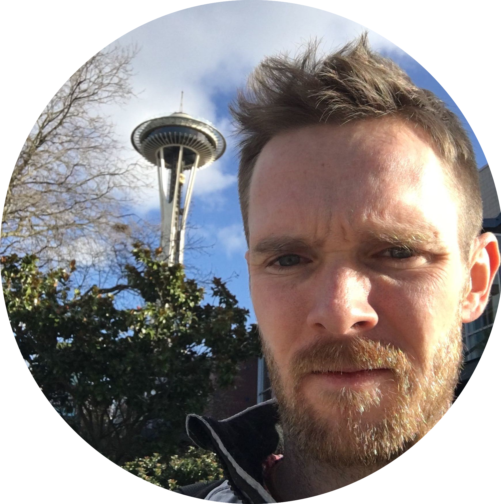

Building deeper connections with the pups.
The team for this project consists of:
Andrew
Carrington
Teddy
Anthony
Alex
How we roll:
Create a new card for
each pet you have
Meet new pets at the park
Make a profile
I'm Carrington, I attended college in Colorado at Colorado State University for Business Management. For the past 7 years I was working in oil-field and code structural welding. I loved welding but wanted something more out of work so I am currently transitioning into tech. I'm very excited about the future possibilities while working with tech.
Im Teddy, I come from the restarant & hospitallity industry. I have 8 years of management expierence. I love working with people and I belive working in tech will alow me to work with people in ways that can change the world.
Im Andrew, I have a background in mechanical engineering. Im looking forward to the new challenge of becoming a professional developer. I enjoy sking in the bacck country as often as I can!

I'm Alex, originally from sunny Tampa Florida. I joined the Navy in 2003 and got see a lot of the world. After 10 years I left the Navy and owned a variety of businesses since then. I currently own a landscape maintnance business that is being sold so I can dedicate myself entirely to learning this new skill set. Im enjoying the challenge so far and im looking forward to the possibilities for my self on the other side.

My professional career bagan when I attended Pacific Lutheran University where I studdied economics and Chineese studies. After graduating I worked a variety of positions including customer service, supply chain management, & global logistics. My passion for business optimization has led me here to code fellows.